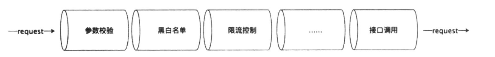
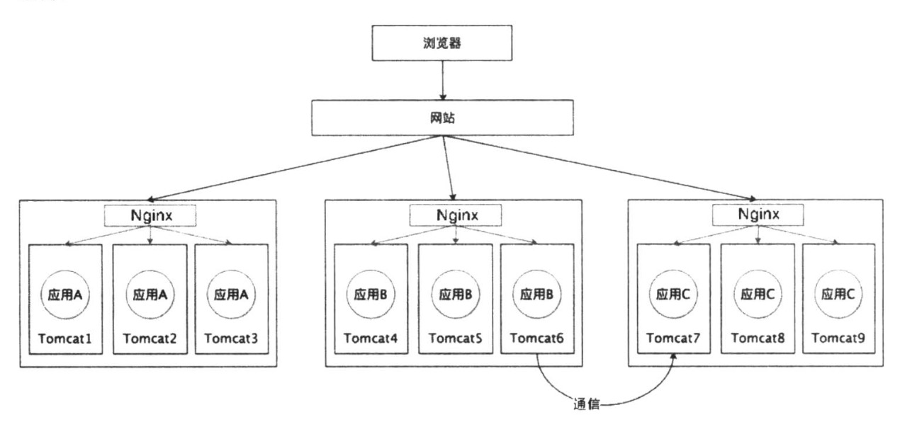
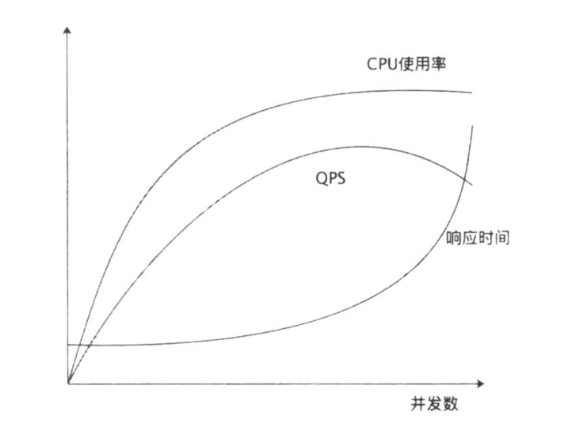

1.1 基本概念
单体应用满足不了增长的业务需求->微服务化->多个服务端/多个URL->调用子服务模块加一层封装，统一调度网关
- 对于业务团队来说，专心做业务
- 对于网关团队，专注流量、服务注册、服务发现、安全、性能、审计等
网关系统的特点：
- 访问量大
- 依赖系统多
网关的基本功能
- 统一接入
- 协议适配
- 流量管控与容错
- 安全防护
网关和代理的区别：
- 代理只是透传数据，不改变协议。网关会改变协议。
API的生命周期
设计-构建-测试-文档-分享-运行-下线
1.2 网关注册中心：
- 采用redis缓存，将API注册(发布）到网关
- 网关系统知道服务的标识和方法
1.3 网关管道处理
基础网关构建业务的时候，通过管道的方式，进行各种对接口调用请求的处理
包括 参数校验、黑白名单、限流控制等等，封装成管道按照顺序执行实现类似于包装器模式，一层套一层的包装，形如管道。同时类似于责任链模式
- 责任链模式中，一个类包括一个handle方法，和一个nextHandle方法，根据条件判断执行路径。
管道的数据传递是单向的，并且管道的不同模块之间应该是可插拔的

1.4 同步网关系统容易GG的点
1、CPU 资源
- CPU利用率（程序运行期间实时占用的CPU百分比）
- CPU负载（在一段时间内，正在使用CPU和等待使用CPU的平均任务数）
需要隔离开某些API突然占用CPU资源过多，耗尽CPU资源从而拖垮集群
2、磁盘
容易引起问题的点： - 不合理的日志打印
- API返回错误，导致连锁错误，使得IO压力变大。
3、网络
网络资源耗尽
1.5 异步网关
异步网关的好处：
- 解耦网络、CPU、IO资源的相互依赖。一个请求不需要同时阻塞这三种资源
- 线程池做隔离，阻隔业务之间崩溃蔓延的可能
1.6 脱库与多级缓存
- 对于网关的访问，通过数据异构的方式将数据存储到redis中
- 可以设置多级缓存（平衡读写性能开销与价格）来提高可用性
- 支持热更新，以不需要重启服务器的方式可以做到修改网关的某个配置
2 OAuth
2.1 基本概念
OAuth(Open Auth)是一个开发标准，在这种标准下，允许用户授权某个第三方应用访问用户在某个服务器上的私密资源数据。
角色包括 资源所有者、第三方应用、授权服务器、资源服务器
- 授权服务器单拉出来便于解耦，统一管理授权
基本流程：
应用申请用户授权-用户授权引用访问资源-应用向授权服务器申请令牌-授权服务器校验后发放令牌-应用拿到令牌访问资源服务器
其中在用户授权应用访问自己资源有4种处理
- 1、授权码：好处用户对于token不可见，只能见到授权码
- 应用请求用户代理授权
- 用户代理请求授权服务器，拿到授权码和资源重定向地址
- 应用拿到授权码和重定向地址，请求授权服务器，拿到token
- 用户拿token去资源服务器请求数据
- 2、隐式授权
- 应用请求token
- 用户代理请求授权服务器，把token给到应用
- 3、密码授权
- 第三方引用拿到用户密码（例如第三方应用是操作系统的一部分）
- 4、客户端授权
- 第三方应用以自己的名义拿到授权
2.2 开放平台
互联网企业可以把自己的服务封装成API接口开放出去，供第三方开发者使用，提供开发API的平台叫做开放平台。
ISV：独立软件服务商（第三方开发者）
API和SPI区别
- API：自己定义，自己实现
- SPI：平台定义，第三方开发者自定义实现
2.3 越权
- 水平越权：用户访问到不归属于这个用户的数据
- 垂直越权：权限提升，提权
2.4 API治理
- 性能
- 性能数据TP：（例如TP99，指的是在一定时间内，排名99%的请求所耗费的事件）
- 可用率
- 可用率 = （调用总次数-调用失败次数）/调用总次数
- 文档可读性
2.5 API经济
- 免费
ISV调试不收费，当ISV把开发API集成之后，按照调用次数付费或是收入分成 - 付费
对于包时包月付费 - API市场 通过开放平台的网关，聚合第三方成熟的业务能力。
3 分布式
3.1 基本概念
分布式：随着业务规模的扩展，应用采用单一服务器无法满足业务需求。此时可以对应用服务器进行水平扩展，将一个应用部署在多个服务器上，同时加上一层负载均衡，来构建一个集群。
分布式集群中，不同的节点之间可以进行通信

3.2 分布式事务
CAP理论 三者不可兼得
- 一致性 所有节点访问的都是同一份最新的数据副本
- 可用性 所有请求得到的相应都是正确的（不保证是最新的）
- 分区容错性
CAP方案-BASE理论
- 基本可用：分布式系统故障时，允许损失部分可用性，拿响应时间和功能损失（降级）来换取可用性
- 软状态：别名弱状态。可以允许系统存在不影响整体可用行的中间状态。（例如显示 ”支付中“，”下单中“等）
- 最终一致性：在允许中间状态的情况下，各项数据最终能够达到一致性。
3.3 分布式锁
多个进程（多台机器）要访问同一个共享资源，需要对其加锁，保证资源的可用性。
3.4 分布式限流
针对分布式集群的限流：
计数器：
- 多个服务器拥有一个共享的存储（Redis集群），可以再Redis集群启用计数器来限制单位时间的访问数目。
- 缺点是无法平滑流量，请求可能不是以一个平稳的速率过来，而是波动过来的
限速器 - 可以针对请求数目，做分段限制
限流维度- 限制某个用户
- 限制某个API
- 限制访问IP
流量包
令牌桶模式：
- 针对单机应用层
- 令牌桶是一个桶容器，包括桶容量、放入令牌速度、消耗令牌速度三个要素
- 把令牌放入到桶，可以兼顾平滑流量和不平滑流量
3.5 性能指标
- QPS Queries Per Second （对服务器每秒查询量）一台服务器每秒能够响应多少查询。
- TPS Transaction Per Second （对服务器每秒事务处理数）一台服务器每秒能处理多少事务。
一个TPS可能包含了多个QPS。 - RT 响应时间
- 并发数 系统能够同时处理的查询请求或事务数量
- QPS = 查询并发数/平均响应时间
- TPS = 事务并发数/平均响应时间

系统流量峰值：
遵循二八定律，20%的时间承载80%的流量。
那么
- （总PV数 * 80%）/(每天秒数 * 20%) = 峰值时间每秒请求数（QPS）
- 峰值时间每秒请求数（QPS）/单台机器的QPS = 需要的机器。
4 MQ（消息队列）
4.1 基本概念
生产者-消费者模型
- 生产者往缓冲区放物料，消费者从缓冲区取物料
- 生产者和消费者可以互相不知晓对方存在
- 生产者和消费者不必同时开展工作，采用队列存储数据，生产者和消费者有各自的生命周期。
| - | 时间耦合 | 时间解耦 |
|---|---|---|
| 空间耦合 | 发送者向确定的接收者通道，接收者必须在通信的时刻存在（RPC调用） | 与确定的接收者通信，接收者不需要在通信时刻存在（安卓厂商推送升级 |
| 空间解耦 | 发送者不需要知晓接收者，但是接收者必须在那个时刻存在（代理，网关） | 发布/订阅系统，消息队列 |
4.2 发布/订阅模式与观察者模式
- 发布订阅是广义上的观察者模式。
- 在观察者模式中，主题维护了订阅者列表，向订阅者发布事件。
- 在发布/订阅模式中，
- 订阅者订阅某个消息
- 队列发布者发布事件到消息队列
- 消息队列向订阅者发布事件
4.3 消费幂等
分布式系统下，对于队列，宁愿重复投递，也要避免消息缺失。
- 为了保证发送成功，发送方会检测接收方对于某个已发送消息的回执，如果拿不到回执就认为发送失败，根据策略重复发送。
- 发布者向队列发送事件重复
- 队列向消费者发送事件重复
所以对于分布式系统，要对于业务做唯一ID幂等处理（中台from_id, form_type)4.4 MQ的优势
1、解耦：
将两个系统在时间和空间上解耦
2、平滑负载
请求存在高峰和低谷期，通过消息队列使得消费者可以始终平滑消费消息。
3、便于最终一致性
- 通过MQ可以确保消息发送到消费者。
- 对于生产者可以将发送动作和本地其他动作放入同一个事务处理。当发送动作异常时可进行补偿机制重发消息
- 发送者通过确保消息发送到消息队列，简化了事务模型
4、广播消费
MQ两种消息模式
- 点对点模式：MQ发送一条消息，只会被一台服务器消费
- 广播消费：MQ发送一条消息，集群中的所有服务器至少消费一次。
- 广播消费不支持顺序消息
- 消费更容易产生重复
4.5 MQ的其他点
1、消息过滤
对于消息打tag，消费者可以不需要解析消息体，解析tag获取到自己感兴趣的内容
2、过期消息处理
对于消息队列里积压的消息，可以先迁移到另外的存储中，然后留置期间判断有无访问，如果无访问可以判断为过期。
3、消息无序
同一时间可能存在多个消息队列，接受同一个生产者的的消息，同时向多个消费者发送消息，所以消息可能会无序。
5 消息推送
个人觉得，这章写的不知所云，跳过
5.1 基本概念
消息推送机制，是服务端向客户端发送消息通知，包括自建消息推送机制，第三方消息推送机制。
5.2 http长连接
HTTP 短连接：
- 一个ruquest 一个response，然后关闭连接
- 三次握手操作，占用资源
HTTP 1.1 以后支持keepalive字段，浏览器和服务器建立连接之后可以保持一段时间，可以支持连接复用。
6 RPC
todo：理清微服务使用RPC和HTTP的优劣
6.1 基本概念
RPC（Remote Procedure Call）远程过程调用。通过网络在跨进程的两个服务器之间传输消息，使用的时候不需要关心底层的网络实现。
RPC过程：客户端请求序列化-客户端socket发送网络请求-服务端反序列化请求-服务端处理请求并相应
6.2 RPC通信机制
- 动态代理
通过一个动态代理接口，实现RPC实现方法和业务代码的解耦合 - 反射
- 反射指在程序运行过程可以访问、检测、修改它本身的状态和行为。
- 通过反射机制，定位到需要被调用的方法，放入到RPC的入参中
- 序列化
- 序列化指的是，将消息转换成字节流，从而可进行网络传输
- 反序列化指的是将字节流转化会消息，从而进行业务处理
- 网络编程
RPC框架一般以TCP为底层（可靠）6.3 RPC调用时间
一次RPC调用时间 = 客户端调用RPC框架时间（包括序列化时间）+ 网络传输时间 + 服务端RCP框架执行时间（包括反序列化时间） + 服务端业务代码处理时间
- RPC请求的时候，RPC框架会拦截请求，将对象序列化，同时在收到相应的时候，进行反序列化
- 网络时间是数据包在网络传输过程的时间，包括请求+相应
- 服务端包括队列等待时间，以及请求拦截+反序列化时间+响应的序列化时间
- 服务端的业务处理时间
对于异常请求（服务端线程池满，客户端超时重试）服务端不会记录这些耗时，但是客户端会记录。
6.4 异步RPC
- 异步调用：对于需要并行进行的多个请求，需要RPC框架支持并行执行
- 异步监听：客户端对于消息的相应结果，并不需要直接接收到，而是需要RPC框架将返回值注入到某个地方
- callback调用：客户端可以在调用RPC框架的时候，注入一个callback对象实例，看起来像是“服务端调用了客户端”
7 IO 暂时看不懂
8 微服务
8.1 基本概念
微服务特点：
- 是一套小型的服务，这些服务有自己的生命周期
- 每个服务以自己的独立的进程运行
- 轻量级通信（相较于传统SOA业务总线而言）
- 围绕业务能力去构建
- 可以独立自动部署
- 可以使用不同的平台、语言
8.2 微服务改造之前的系统梳理
一个系统包含三类功能
- 接口服务类：向外部提供服务
- 找出关键接口，确保关键接口可用，不可降级。
- 采用灾备等手段
- 网页类：
- 对于关键页面（如首页）做好多级缓存，托底数据，确保页面上有数据
- 任务类系统：例如统计、数据同步等功能的系统
- 考虑任务是热备、冷备
- 考虑资源调度
8.3 微服务改造的数据库拆分
- 现有单集群A
- 创建集群BC，将BC数据库作为集群A的数据库从库
- 观察数据，按需清掉不需要的表
9 容错
9.1 基本概念
在软件架构领域里，认为局部错误客观存在，容错的作用是为了避免局部错误蔓延到整体。
9.2 降级和限流
降级操作一般是由统一配置的降级开关来实现的
降级操作的实现方法
- 快速失败
- 无声失败（返回null， 空map，空list等）
- 返回默认值
- 自己组装值返回
利用远程缓存（托底数据）
对于写操作，需要将错误信息返回给调用者，对于读操作，可以返回缓存的值或是默认值。
9.3 线程池隔离
线程池隔离可以防止单一服务占用线程资源过高拖垮整个应用。缺点是增加了CPU开销（业务执行时增加了请求排队，调度，上下文切换操作）
线程池的分配方法：
- 1、固定大小的线程池，通过权重的方法为某个方法分配一个固定大小的线程数
- 2、设置一个公用的线程池，所有的方法去瓜分它
9.4 快速失败
可以为调用操作设置超时时间，如果被调用方异常，调用方将尽早结束这次请求
9.5 熔断
熔断三个状态：这三个状态的转化可以根据业务规则自行设置
- 打开：
- 半开：
- 关闭：
9.6 常用优化点
- 分离
- 数据库分库
- 线程池隔离
- 微服务拆分
- 缓存
- 拆分高访问量key，避免全访问同一个缓存服务器节点
- 三级缓存
- 托底数据
- SQL优化
- 慢SQL优化查询优化
- 索引
- 优化select字段，对于字段很多的表，减少select优化性能
- join操作等
- 快速失败
- 降级限流
- 对于非核心功能，如（公用资源）的资源耗尽，可以进行屏蔽降级，返回空或异常
- 对于核心功能，资源耗尽使用托底数据或是本地缓存数据（线上需要降级时应该做到快速切换）
- 性能压测